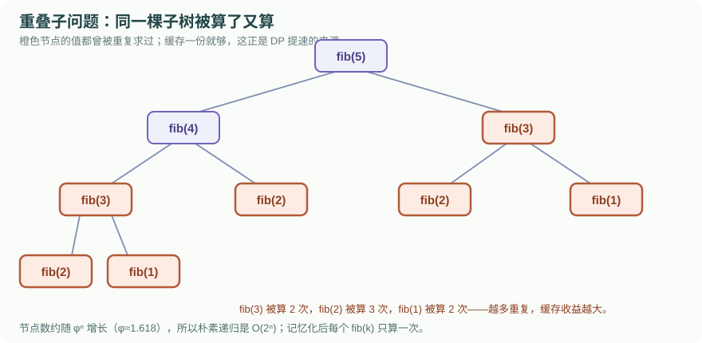
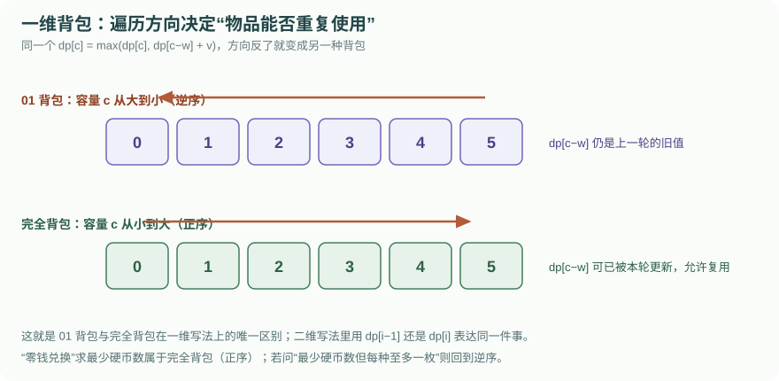
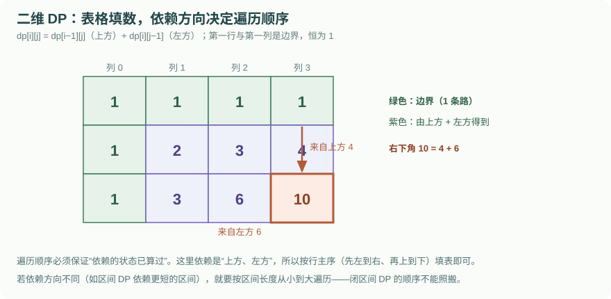

动态规划：把重复计算变成一次就够
动态规划并不神秘：它就是“暴力递归 + 备忘录”。难点只有两个——把问题拆成有重叠的子问题，以及给状态一个准确的定义。先定义状态、再写转移，剩下的只是顺序和边界。
从一个失败的贪心说起
面试里有一道经典题叫“打家劫舍”：一排房子里不能偷相邻的两间，求能偷到的最大金额。很多人第一反应是“隔一间偷一间，奇数位和偶数位比大小”。用 [2, 1, 1, 2] 试一下：奇数位是 2+1=3，偶数位是 1+2=3，贪心给出 3。但正确答案是偷第 1 间和第 4 间，得 2+2=4——你可以连跳两间，隔一间取一间的直觉不成立。
为什么会错？因为“每一步选当前最优”并不能保证全局最优。换个想法：只问“前 i 间房子能偷到的最大金额是多少”，并要求它是从“前 i−1 间”和“前 i−2 间”的最优值推出来的。这个“用子问题的最优值推出更大问题的最优值”的思路，就是动态规划。
本章先建立动态规划的两个前提，再给出一套固定的解题步骤，最后用一维、二维和区间三类经典题型把它走通。上一章的回溯是“枚举所有解”，本章要练的是“在大量重叠子问题里找出唯一的最优值（或方案数）”。
核心：最优子结构 + 重叠子问题
动态规划能用，需要两个条件同时成立：
- 最优子结构：原问题的最优解，可以由子问题的最优解拼出来。如果子问题的最优解拼不出大局的最优，DP 就失效。
- 重叠子问题：不同分支会反复求到同一个子问题。如果子问题彼此不重叠（如分治），直接递归就好。
斐波那契是看清这一点最干净的例子。它的定义 F(n)=F(n−1)+F(n−2) 同时满足两个条件，但直接递归会反复求解同一项：

把“缓存”加进去，就得到记忆化递归；再去掉递归、从基础情形往上推，就是递推。三种写法对应三种境界：
# ① 朴素递归：O(2^n)
def fib_naive(n):
if n <= 1:
return n
return fib_naive(n - 1) + fib_naive(n - 2)
# ② 记忆化（自顶向下）：O(n)
from functools import lru_cache
@lru_cache(maxsize=None)
def fib_memo(n):
return n if n <= 1 else fib_memo(n - 1) + fib_memo(n - 2)
# ③ 递推（自底向上）：O(n) 时间，O(1) 空间
def fib_dp(n):
prev2, prev1 = 0, 1
for _ in range(n):
prev2, prev1 = prev1, prev1 + prev2
return prev2记住一句话：动态规划 = 暴力递归 + 备忘录。如果觉得难，就先写出暴力递归，再想办法把重复的部分“存起来”。
DP 解题五步法
做 DP 题不要一上来就写循环。先按下面五步把想法写下来，代码只是翻译：
- 定义状态：dp[i]（或 dp[i][j]）到底表示什么？这步最难，也最关键。
- 写转移方程：当前状态如何由更小的状态推出？
- 定初始化：最小的几个状态值是多少？它们是递推的起点。
- 定遍历顺序：保证算当前状态时，它依赖的状态都已算好。
- 定答案位置：最终值在 dp 的哪个位置？
下面每个例子都按这五步展开。你会发现“定义状态”一旦写好，后面四步几乎是自动的。
一维 DP：爬楼梯、打家劫舍、最大子数组和
先看爬楼梯：每次能走 1 阶或 2 阶，问走到第 n 阶有多少种走法。用五步法：dp[i] = 走到第 i 阶的方法数；到第 i 阶只能从 i−1（走 1 阶）或 i−2（走 2 阶）来，所以 dp[i]=dp[i−1]+dp[i−2]；初始化 dp[0]=dp[1]=1；从小到大遍历；答案是 dp[n]。这和斐波那契是同一个递推，只是初值不同。
打家劫舍把“选或不选”写进状态：dp[i] 表示前 i 间房能偷到的最大金额。既然不能偷相邻的，对于第 i 间，要么不偷（继承 dp[i−1]），要么偷（前 i−2 间的最优值加上当前金额）：
def rob(nums):
prev2 = prev1 = 0 # 分别代表 dp[i-2] 和 dp[i-1]
for num in nums:
prev2, prev1 = prev1, max(prev1, prev2 + num)
return prev1“最大子数组和”则把状态定义成以当前位置结尾：dp[i] = 以 nums[i] 结尾的最大子数组和。于是要么从 nums[i] 重新开始，要么接在前一个子数组后面：dp[i]=max(nums[i], dp[i−1]+nums[i])。这就是 Kadane 算法，O(n) 时间、O(1) 空间。
def max_subarray(nums):
cur = best = nums[0]
for num in nums[1:]:
cur = max(num, cur + num) # 重开 或 延续
best = max(best, cur)
return best打家劫舍的逐步递推
固定金额序列 [2, 1, 1, 2]，拖动滑块查看每一步 dp 的值。
注意“以 i 结尾”这个限定很重要：它把“任意子数组”这个大问题，化成了“固定结尾”的递推，同时也让答案变成了所有 dp[i] 的最大值，而不是 dp[n]。
背包：01 与完全背包
背包问题是二维 DP 的典型代表，先看 01 背包：有 n 个物品，每个有重量 w 和价值 v，背包容量为 C，每个物品最多选一次，求能装下的最大总价值。用五步法：dp[i][c] = 前 i 个物品、容量 c 时的最大价值；对第 i 个物品，“不选”继承 dp[i−1][c]，“选”则 dp[i−1][c−w]+v，取较大值。
二维数组其实只需保留上一行，于是可以压成一维。但容量必须逆序遍历，否则 dp[c−w] 会被本轮刚更新的值污染，一个物品就被选了多次。换句话说，遍历方向决定了“物品能否重复使用”：

def knap_01(weights, values, capacity):
dp = [0] * (capacity + 1)
for w, v in zip(weights, values):
for c in range(capacity, w - 1, -1): # 逆序：物品只用一次
dp[c] = max(dp[c], dp[c - w] + v)
return dp[capacity]
def coin_change(coins, amount):
INF = float("inf")
dp = [0] + [INF] * amount
for i in range(1, amount + 1):
for coin in coins:
if coin <= i and dp[i - coin] + 1 < dp[i]:
dp[i] = dp[i - coin] + 1 # 正序：硬币可重复用
return dp[amount] if dp[amount] != INF else -1“零钱兑换”求凑出金额所需的最少硬币数，正是一个完全背包：每种硬币可用无限次，所以从小到大正序遍历。如果题目改成“每种硬币至多一枚”，就回到逆序。
二维 DP：网格、LCS、编辑距离
当状态需要两个维度描述时，就得到二维 DP 表。“不同路径”是最直观的一道：m×n 网格从左上走到右下，只能向右或向下。dp[i][j] = 到达 (i,j) 的路径数 = 上方 + 左方；第一行和第一列是边界，各只有一条路。填表后右下角就是答案。

最长公共子序列（LCS） 把状态定义在两个字符串上：dp[i][j] = text1 前 i 个字符与 text2 前 j 个字符的 LCS 长度。如果末尾字符相等，它一定在 LCS 中，所以 dp[i][j]=dp[i−1][j−1]+1；否则舍弃其中一个末尾，取 dp[i−1][j] 与 dp[i][j−1] 的较大值。
def longest_common_subsequence(a, b):
prev = [0] * (len(b) + 1)
for ch1 in a:
cur = [0]
for j, ch2 in enumerate(b, 1):
if ch1 == ch2:
cur.append(prev[j - 1] + 1)
else:
cur.append(max(prev[j], cur[j - 1]))
prev = cur # 滚一维，不需存整张表
return prev[-1]编辑距离把“增、删、改”三种操作写进转移：字符相同则继承 dp[i−1][j−1]；不同则取“删一个”“插一个”“改一个”三种走法的最小值加一：
def min_distance(word1, word2):
prev = list(range(len(word2) + 1))
for i, ch1 in enumerate(word1, 1):
cur = [i] + [0] * len(word2)
for j, ch2 in enumerate(word2, 1):
cost = 0 if ch1 == ch2 else 1
cur[j] = min(prev[j] + 1, # 删
cur[j - 1] + 1, # 插
prev[j - 1] + cost) # 改 / 相同
prev = cur
return prev[-1]两道题都用了“滚动数组”：算第 i 行时只用到第 i−1 行，于是把二维压成一维，空间从 O(m·n) 降到 O(n)。代价是可读性变差，面试时建议先用二维把思路说清楚，再提空间优化。
区间 DP 与适用边界
当状态是一个区间 [i, j] 时，就得到区间 DP。最长回文子串是一个典型：dp[i][j] 表示子串 s[i..j] 是否为回文。如果两端字符相等且内层 s[i+1..j−1] 也是回文，那么 s[i..j] 就是回文。注意它依赖更短的区间，所以遍历顺序不是按行或列，而是按区间长度从小到大：
def longest_palindrome_dp(s):
n = len(s)
dp = [[False] * n for _ in range(n)]
best = ""
for i in range(n):
dp[i][i] = True
best = s[i]
for length in range(2, n + 1): # 按区间长度递增
for i in range(n - length + 1):
j = i + length - 1
if s[i] == s[j] and (length == 2 or dp[i + 1][j - 1]):
dp[i][j] = True
if length > len(best):
best = s[i:j + 1]
return best同一题也能用“中心扩展”在 O(n²) 时间、O(1) 空间内解决，而且通常更快。这说明 DP 不是唯一解，甚至不一定是最优解——它只是把“有重叠子问题的最优化/计数”变得系统化。
最后划清适用边界：
- “所有递归都能改成 DP”：不能。要同时具备最优子结构和重叠子问题；只是分治（子问题不重叠）或只是回溯枚举（求所有解）都不适合。
- “DP 一定比回溯快”：求最优值时通常如此；但若题目要求列出所有具体方案，DP 无法枚举输出，只能用回溯。
- “空间优化总是安全”：滚动数组要求“计算本轮只需要上一轮的值”。若转移还依赖更早的行，压成一维就会算错。
- “状态越多越准”：状态维度越高，时间和空间成倍增长。能把不必要的维度消掉，才是真正掌握 DP。
带走三个判断准则
- 先问两个问题：能否拆出重叠的子问题？最优解是否由子问题最优解构成？两个都是“是”，才轮得到 DP。
- 把状态定义写清楚（dp[i] 到底表示什么），转移方程往往随之而来；定义错了，后面全错。
- 遍历顺序由依赖方向决定，空间优化由“这一步还需不需要旧值”决定——01 背包逆序、完全背包正序就是同一件事的两面。
继续学习与校验资料
- Dynamic programming — 最优子结构、重叠子问题与 Bellman 的原始表述
- Python
functools.lru_cache— 记忆化递归的标准写法 - 上一章：回溯算法 — 回溯求所有解，DP 求最优值或计数
- 运行参考：
examples/dynamic_programming.py；测试：tests/test_dynamic_programming.py